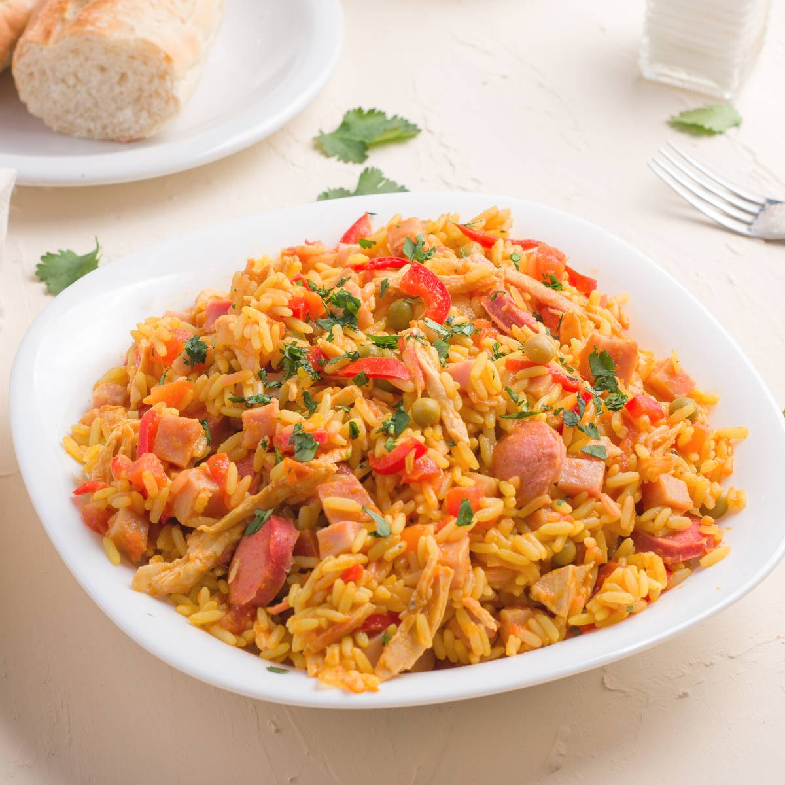

Arroz A La Valenciana

Description
Arroz a la Valenciana is the Nicaraguan answer to Spain's Paella. It is cooked on a stovetop as opposed to an oven,
and typically doesn't have any seafood in it.
There's a lot of flavour in this dish with the veggies and meat, but
don't let the many ingredients fool you. This dish is super easy to make and uses ingredients
you probably already have!
The exception would be achiote or annato powder, but this is used mainly for colour so don't sweat it if you don't have it.
Ingredients
- 1 cup of cooked white rice
- 1 pound of boneless skinless chicken breast
- 2 chopped classic hotdog sausages (not beef)
- 1 tablespoon of olive oil
- 1 tablespoon of salted butter
- 1/2 cup of chopped white onions
- 1/3 cup of chopped baby carrots
- 1/3 cup of chopped celery
- 1/3 cup of green peppers
- 1 medium tomato diced
- 1 tablespoon of chopped garlic cloves
- 1/2 cup of chicken stock (reserved from boiled chicken)
- 1 to 2 tablespoons of adobo all purpose seasoning
- 1/2 packet of sazon with achiote
- 1 tablespoon of ketchup
- 1 teaspoon of worcestershire sauce
- Fresh or canned sweet green peas (optional)
- Cilantro for garnish
Instructions
- Cook 1 cup of white rice with 1 1/3 cup of chicken stock until tender. Save rice for next day.
- On the next day, in a pot with plenty of water add chicken breast, chopped garlic and adobo. Boil chicken until fully cooked.
- Once cooked, remove chicken from broth and shred with 2 forks. Reserve part of the broth for later.
- In a saute pan, add olive oil and butter. Once melted add veggies: chopped onions, celery, carrots, green peppers and tomatoes. Cook until soft for about 3 minutes.
- Next add shredded chicken along with reserved chicken broth. Simmer for 5 minutes.
- Add cooked rice to the chicken and veggies. Equal parts rice to chicken.
- Last fold in the chopped hotdogs and cook for 2 minutes.
- For flavor and color, add half a packet of sazon, dashes of ketchup and worcestershire sauce. Mix well.
- If desired, add canned or fresh green peas for more sweetness (optional).
- Serve with cilantro and enjoy.
Back to recipes